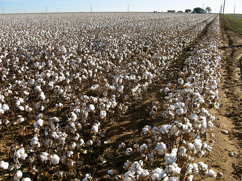
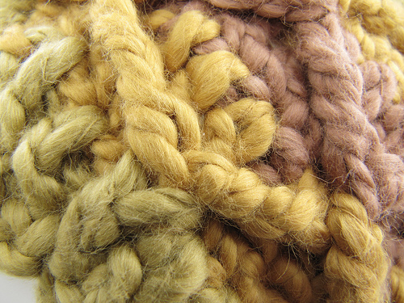

El algodón ecológico de colores evita el uso de millones de toneladas de pesticidas
El cultivo de algodón es uno de los grandes males ambientales de nuestro tiempo, y de los menos conocidos. Las plantaciones de algodón convencional ocupan el 3% de la superficie cultivada del planeta pero consumen el 23% de los insecticidas usados en el mundo y el 10% de todos los químicos, tanto en la plantación como en el proceso de tinte del algodón. 
Los plaguicidas utilizados en las plantaciones de algodón convencional han provocado catástrofes de grandes magnitudes. Por ejemplo, la sequía en el mar de Aral en Turkestán. Otro ejemplo es el desastre de Bophal, en India, donde murieron miles de personas en 1984 por el escape de un gas letal utilizado como plaguicida en los cultivos de algodón. Además, el bromuro de metilo y casi todos los demás plaguicidas organoclorados que se utilizan en el cultivo de algodón están clasificados como potencialmente cancerígenos, es decir, que pueden desarrollar cáncer, además de dañar en muchos casos la capa de ozono.
Por otro lado, la industria del tinte del algodón es de las más contaminantes del mundo porque los procesos de teñido del algodón implican la emisión de importantes cantidades de peróxido de hidrógeno, sodio, cloro e hipoclorito sódico, tanto a las aguas del subsuelo o a la atmósfera. También, en el proceso del tinte del algodón se emiten productos sintéticos derivados del azufre, el cromo y el petróleo, junto con cobre, níquel y otros metales pesados. 
El cultivo del algodón certificado no crea problemas similares. El algodón de Estados Unidos, revisado por entidades estatales, garantiza que los campos de cultivo no han sido tratados con ningún producto químico en un periodo de menos de tres años y que los campos mantienen distancias mínimas con otras plantaciones que puedan usar algún producto contaminante. Algunas marcas de algodón orgánico como Fox-Fibre tienen campos de cultivo que han estado de tres a diez años sin ningún tratamiento con agroquímicos. En estos campos de cultivo se mantiene la franja de seguridad alrededor, y por supuesto, no se utiliza ningún producto que no sea natural durante el cultivo. Además, las plagas habituales de las plantas de algodón se combaten con control biológico.
Si tenemos en cuenta que la mitad, es decir el 50%, de todos los tejidos que se fabrican en el mundo son de algodón, y casi la otra mitad lo llevan en su composición, comprenderemos fácilmente la enorme importancia que tiene este producto en la agricultura y el medio ambiente de todo el planeta. De hecho, el cultivo de esta planta textil da trabajo a más de 100 millones de campesinos y procesadores. 
La mayoría de las personas, sin embargo, ignoran que el algodón puede crecer en la planta en colores distintos al blanco. Hace 5.000 años ya se cultivaba en América algodón de color marrón o verde, como han demostrado yacimientos en Tehuacán, México, o Huaca Prieta, en la costa norte del Perú. La revolución industrial y la posterior aparición de los tintes químicos baratos, a principios del siglo XX, eliminó las plantaciones del algodón de colores, ya que resultaba más barato cultivar algodón blanco y posteriormente teñir el algodón. Además, con este sistema industrial, la paleta de colores era ilimitada.
Las plantaciones de algodón de color quedaron relegadas a unas pocas tribus indígenas de los Andes y, ahora, Fox Fibre ha recuperado esas variedades de algodón en color Búfalo, Coyote, Palo Verde y Green, cada vez más conocidas y apreciadas. Empresas como Levi Straus, Espirit, Marco Polo y otras han hecho compras millonarias de tejido ecológico, y la creadora de la marca, Sally Fox, ha recibido numerosos premios por su contribución a la sostenibilidad del planeta. Instituciones públicas de España y otros países están estudiando en sus documentos de contratación para suministro de materiales y servicios que algunas prendas de trabajo o artículos de lencería estén elaborados obligatoriamente con algodón 100% ecológico.